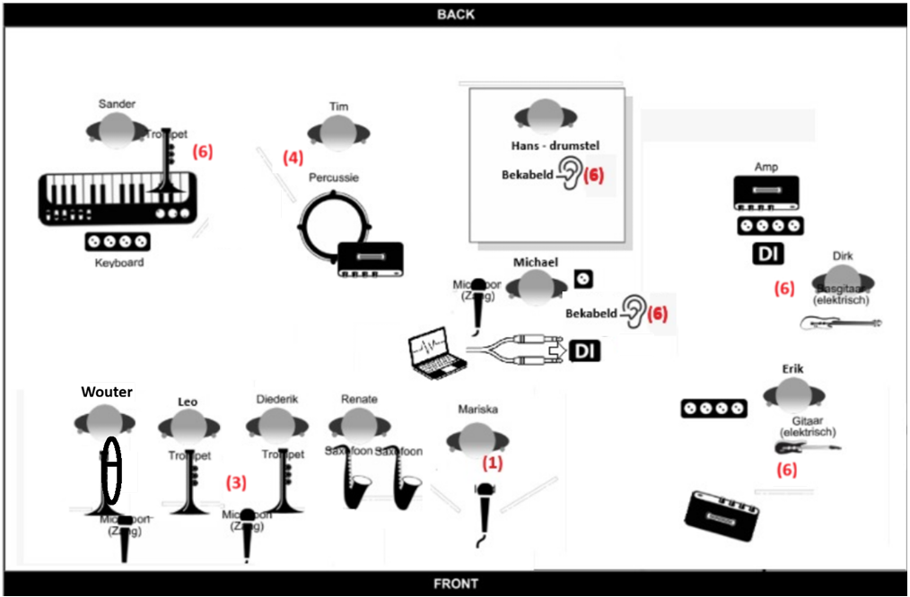
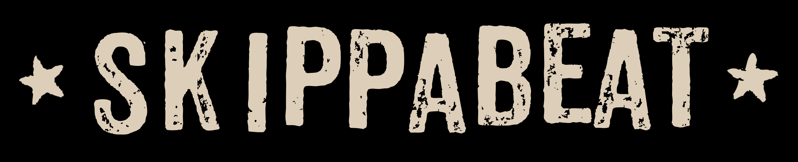

Productie-informatie
Onze rider
Alle actuele informatie voor organisatie, productie en techniek.
Hospitality
Algemeen
Aankomsttijd: Minimaal 1 uur voor het optreden.
Parkeerplaatsen: 5
Geluidstechnicus: Een professionele geluidstechnicus dient aanwezig te zijn, tenzij afgesproken is dat SKIPPABEAT een eigen geluidstechnicus meeneemt.
Backstage
Graag een rustige ruimte om te wachten, om te kleden en spullen te laten staan (met toezicht indien mogelijk).
SKIPPABEAT heeft geen vaste crewleden, maar wordt mogelijk wel geholpen door partners of vrienden (bijvoorbeeld als chauffeur). Zij moeten de locatie ook kunnen betreden al is de zaal nog niet officieel geopend en toegang krijgen tot de backstage. Indien gewenst kunnen we vooraf de namen doorgeven wie dit betreft.
Catering
Dranken (graag gekoeld beschikbaar backstage):
- Bier (ook alcoholvrij, geen HEINEKEN of AMSTEL)
- Mineraalwater (plat)
- Cola/Sprite/Cassis/Fanta
Indien op het terrein één of diverse bars aanwezig zijn, mag dit ook worden vervangen met bonnen/munten die genoeg zijn voor 10 consumpties p.p.
Indien er maaltijden geserveerd worden. Michael volgt een veganistisch dieet en Renate bij voorkeur vegetarisch.
Technisch
Geluid en monitoring
- Groep 1: Zang - Gitaar
- Groep 2: Blazers - Gitaar - Zang
- Groep 3: Zang - Gitaar - Blazers
- Groep 4: Gitaar - Zang - Percussie
- Groep 5: Zang
- Groep 6: Zaal mix
Extra Aandachtspunten
- Versterk de percussie goed uit! Dit is vaak lastig gebleken, heb hier extra aandacht voor.
- Graag draadloze microfoons (inclusief draadloze zenders en ontvangers) regelen voor Mariska en Michael.
- Blazers brengen eigen clip-ons of draadloze zenders mee.
Priklijst / Instrumentenlijst
- Hans — Drumstel
- Dirk — Basgitaar, Amp
- Erik — Gitaar
- Tim — Percussie
- Leo — Trompet
- Sander — Keyboard, Trompet
- Renate — Saxofoon, Microfoon (Zang)
- Mariska — Lead, Draadloze microfoon
- Wouter — Trombone
- Diederik — Trompet
- Michael — Sampler via laptop (via DI) + Draadloze microfoon (Zang)
Podiumopstelling

Algemeen
De Bandleden
- Mariska Kerst — Zang
- Michael Benjaminsz — Zang / Hypeman
- Erik De Ridder — Gitaar
- Dirk Kleemans — Basgitaar
- Sander Martinet — Toetsen & Trompet
- Hans Albers — Drums
- Tim Schrijver — Percussie
- Renate de Jong — Sax
- Wouter van Bavel — Trombone
- Leo van Mook — Trompet
- Diederik Smits — Trompet
SKIPPABEAT
Over de band
De Bredase skaband SKIPPABEAT is uitgegroeid tot een vaste waarde in Breda en ver daarbuiten. Met hun topmuzikanten brengt SKIPPABEAT een energieke en veelzijdige ska-show die iedereen laat bewegen!
"Ska met een hoofdletter, punk met een knipoog, aanstekelijk als een malle."
— 3voor12
Al 12 jaar lang zet SKIPPABEAT elk podium op zijn kop met opzwepende ska-shows! Ontstaan uit de as van Manoman, is deze Bredase bende uitgegroeid tot een geoliede, Engelstalige ska-machine die stuiterende ska, rauwe punk en vette reggae in hoog tempo op je afstuurt.
Krachtige vocalen, explosieve MC gecombineerd met dikke samples, een pompende ritmesectie en vette blazerspartijen vormen samen de brandstof voor een energieke live-experience. Stilvallen is er niet bij; elk optreden wordt neergezet als een uitbundig feestje.
Gewapend met een arsenaal aan eigen tracks en een niet te stoppen live-energie raast de band langs feesten, kroegen en festivals. Trek je skankin' shoes maar vast aan, want als SKIPPABEAT speelt, gaat de zaal gegarandeerd plat!
